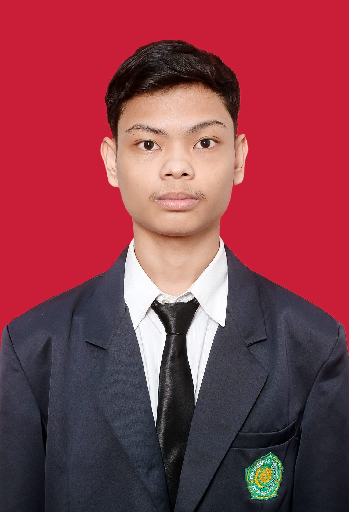

Lulusan S1 Teknologi Informasi dengan minat pada Web Development, IT Support, dan Information Systems. Memiliki pengalaman dalam pengembangan sistem berbasis web, perancangan database, UI/UX, serta troubleshooting komputer. Terbiasa menggunakan Laravel, PHP, MySQL, HTML, CSS, JavaScript, Git, dan GitHub.

Saya adalah lulusan S1 Teknologi Informasi yang memiliki ketertarikan pada pengembangan sistem informasi berbasis web.
Saya terbiasa mempelajari teknologi seperti PHP, Laravel, MySQL, HTML, CSS, JavaScript, dan Git untuk membangun solusi digital.
Saya tertarik untuk terus mengembangkan kemampuan di bidang teknologi informasi dan pengembangan aplikasi.
Sistem informasi berbasis web yang dikembangkan untuk membantu pengelolaan persediaan obat pada Puskesmas Pembantu Desa Maur Lama, Sumatera Selatan. Sistem ini membantu proses pencatatan stok, monitoring persediaan, dan pembuatan laporan secara terstruktur.
Key Features:
My Contribution:
Website portfolio pribadi yang digunakan untuk menampilkan profil, kemampuan, pendidikan, project, dan Curriculum Vitae secara profesional sebagai bagian dari personal branding.
Key Features:
Berkontribusi dalam proses perancangan antarmuka dan prototype untuk mendukung pengembangan solusi digital yang mudah digunakan.
Mengembangkan sistem informasi berbasis web untuk membantu pengelolaan persediaan obat, pencatatan stok, monitoring ketersediaan, dan pembuatan laporan secara terstruktur.
Universitas 'Aisyiyah Yogyakarta
Information Technology Graduate